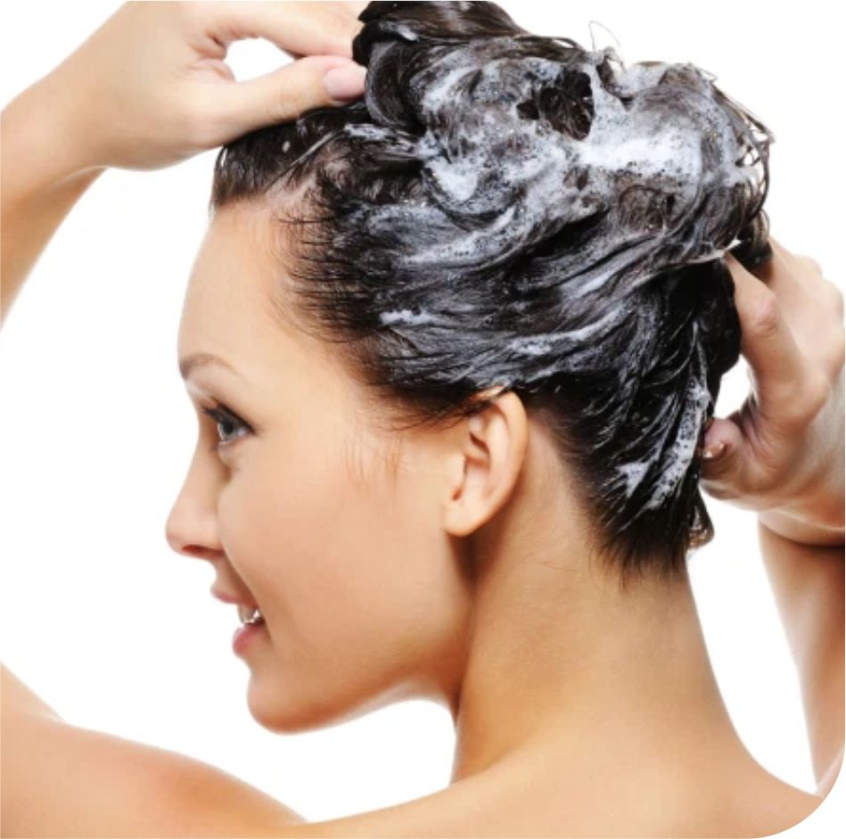
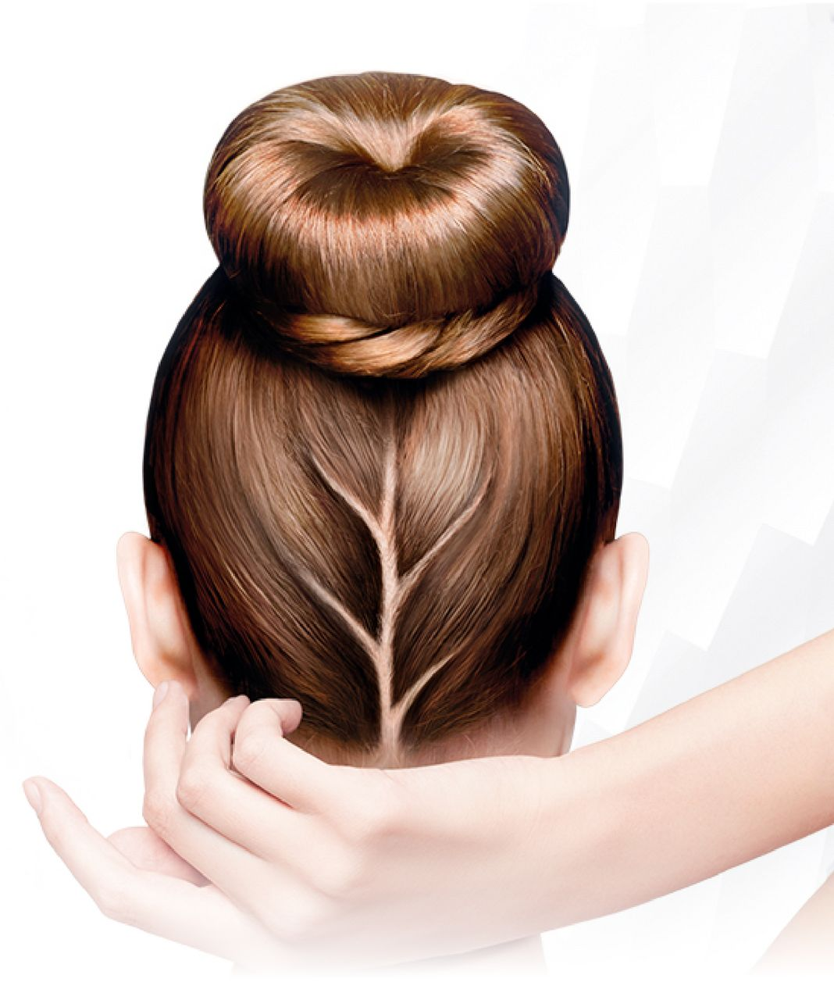

Para prevenir alguns problemas capilares, nada melhor do que uma rotina de cuidados, né? Uma boa forma de fortalecer os fios, é iniciar um bom cronograma capilar, que engloba três tratamentos principais: hidratação, nutrição e reconstrução. Cada uma dessas etapas, soluciona um dano específico, que pode ter sido causado por fatores, como raios solares, poluição, uso excessivo de secador e chapinha, muitos procedimentos químicos, cloro presente na água e vários outros.
Não importa qual é a textura ou curvatura dos seus fios, o cronograma capilar é indicado para todos os tipos de cabelo. Intercalar os três tratamentos, ajuda a manter a saúde das madeixas. Até porque, como você já sabe, o cabelo é um tecido morto e, para manter o comprimento impecável, é preciso fazer mais do que apenas lavar com shampoo e condicionador.
Entenda na próxima página o que fazer em cada etapa:
Hidratação
Esse tratamento é o mais popular, você com certeza já deve ter ouvido alguma coisa sobre! Ele é responsável por devolver a água e alguns outros nutrientes aos fios. Uma rotina de hidratação vai livrar o seu cabelo do ressecamento. Uma máscara capilar que tem a proposta de hidratar deve ter os seguintes ativos: D-pantenol, Glicerina, babosa, Aloe Vera, ceramida e outros.

Nutrição
Cabelos crespos e cacheados se beneficiam muito dessa etapa, porque a curvatura dificulta que a oleosidade natural do couro cabeludo chegue até as pontas dos fios. Mas, qualquer tipo de curvatura poder ser beneficiada por essa etapa, já que é uma ótima forma de repor os lipídios, ou seja, a gordura natural dos fios.
O hábito de nutrir o cabelo, cria uma camada protetora, deixando os fios macios, brilhantes e alinhados. Os principais ativos para uma boa nutrição são os óleos vegetais como o rícino, coco, argan, manga, girassol, abacate, amla e oliva. Teste cada um para descobrir qual atende melhor às suas necessidades.
Reconstrução
Fios quebradiços, finos ou porosos? Tá na hora de reconstruir! O tratamento age na reposição de proteína dos fios, mas é preciso ter cautela. Como se trata de uma etapa potente do cronograma capilar, preste atenção na necessidade dos seus fios.
Cabelos extremamente danificados ou quimicamente tratados precisam de mais reconstrução. Nesse caso, o ideal é reconstruir toda semana. Agora, se seu cabelo está saudável, faça o tratamento uma vez a cada quinze dias ou uma vez por mês. O excesso de reconstrução em um cabelo saudável pode dar efeito rebote! Para garantir essa etapa do cronograma, procure por máscaras que tenham queratina, colágeno, arginina, aminoácidos e cisteína na composição.
Outros cuidados
Além de seguir um bom cronograma capilar, não passe muito tempo sem lavar os fios. Muitas pessoas tendem a lavar menos o cabelo quando estão com algum quadro de queda, mas isso só agrava a situação, tá? O excesso de oleosidade provoca caspa, fazendo o cabelo cair ainda mais. Outra dica é pentear da forma certa, de baixo para cima. Apesar de comum, o hábito de pentear puxando da raiz até as pontas, aumenta as chances de quebra. Por isso, sempre com muita delicadeza, desembarace as pontas primeiro e só depois vá até a raiz.

Tenha muita cautela também na hora de submeter suas madeixas a muitos procedimentos químicos. Alisamentos aliados à muitas descolorações e tinturas, em um curto espaço de tempo, deixam os fios fracos e quebradiços. Não há cabelo que aguente, por isso, deixe seu cabelo respirar, combinado?
Por último, mas não menos importante, não tome nada sem consultar um médico.
O número de medicamentos que garantem o fortalecimento e crescimento dos fios tem crescido no mercado. Porém, não faça uso deles antes de falar com um especialista. Vitaminas são essenciais para a saúde capilar, mas o uso indiscriminado pode causar distúrbios no organismo. Cada corpo é único, o que funciona para alguns, talvez não funcione para você.